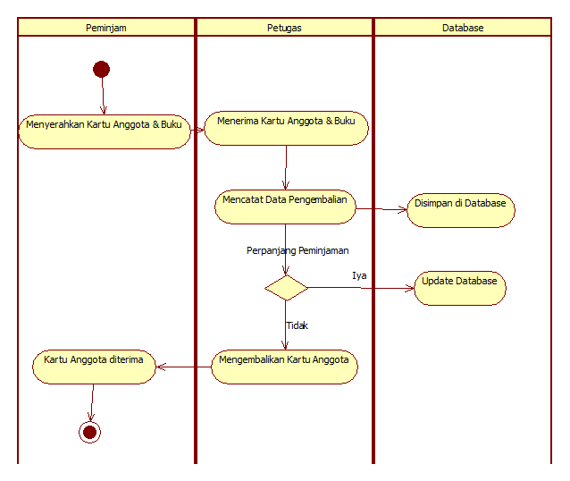

Class Diagram: Menunjukkan kelas-kelas dalam sistem dan hubungan antar kelas.
Object Diagram: Menunjukkan instansi dari kelas pada suatu waktu tertentu.
Component Diagram: Menunjukkan komponen perangkat lunak dan hubungan antar komponen.
Deployment Diagram: Menunjukkan distribusi perangkat lunak pada perangkat keras.
Package Diagram: Menunjukkan pengelompokan elemen-elemen model.
Composite Structure Diagram: Menunjukkan struktur internal dari kelas dan kolaborasinya.
Profile Diagram: Menunjukkan ekstensi dari UML untuk domain tertentu.
Diagram Perilaku UML
Use Case Diagram: Menunjukkan interaksi antara aktor dan sistem.
Activity Diagram: Menunjukkan alur kerja atau aktivitas dalam sistem.
State Machine Diagram: Menunjukkan perubahan status objek dalam sistem.
Sequence Diagram: Menunjukkan interaksi objek berdasarkan waktu.
Communication Diagram: Menunjukkan interaksi antar objek dan pesan yang dikirimkan.
Interaction Overview Diagram: Menunjukkan alur interaksi dalam sistem.
Timing Diagram: Menunjukkan perubahan status objek berdasarkan waktu.
Macam-macam Diagram UML
1. Use Case Diagram
Use Case Diagram menggambarkan interaksi antara aktor dan sistem. Contoh:
2. Class Diagram
Class Diagram menunjukkan struktur kelas dalam sistem. Contoh:
4. Activity Diagram
Activity Diagram menunjukkan alur kerja atau aktivitas dalam sistem. Contoh:

Perbandingan DFD dan UML
Aspek
DFD
UML
Pendekatan
Berbasis aliran data
Berbasis objek
Fokus
Alur data dan proses
Struktur dan perilaku sistem
Kegunaan
Analisis sistem informasi
Perancangan sistem perangkat lunak
Diagram
Diagram konteks, DFD Level 0, 1, dst.
14 jenis diagram struktural dan perilaku
Studi Kasus: Sistem Informasi Pendaftaran Ekstrakurikuler Sekolah
Deskripsi Studi Kasus
SMA Harapan Bangsa memiliki banyak kegiatan ekstrakurikuler seperti Pramuka, Basket, dan Musik. Selama ini, proses pendaftaran ekstrakurikuler masih dilakukan secara manual, yaitu dengan mengisi formulir kertas yang kemudian dikumpulkan ke bagian kesiswaan. Data peserta sering tercecer, sulit direkap, dan tidak ada notifikasi jika kuota sudah penuh. Sekolah ingin membangun sistem informasi berbasis web agar proses pendaftaran lebih mudah, data peserta tersimpan rapi, dan admin bisa memantau kuota setiap ekstrakurikuler secara real-time.
Analisis Masalah
Proses manual membuat data sering hilang atau tertukar.
Pengecekan kuota harus dilakukan secara manual, sehingga sering terjadi kelebihan peserta.
Rekap data peserta memakan waktu lama dan rawan kesalahan.
Tidak ada notifikasi kepada siswa jika pendaftaran berhasil atau gagal.
Solusi yang Ditawarkan
Sistem informasi pendaftaran ekstrakurikuler berbasis web.
Siswa dapat melihat daftar ekstrakurikuler, kuota, dan melakukan pendaftaran secara online.
Admin dapat mengelola data ekstrakurikuler dan peserta, serta memantau kuota secara otomatis.
Sistem memberikan notifikasi kepada siswa setelah pendaftaran.
Pemodelan UML
1. Class Diagram
Tabel Data Sederhana
Kesimpulan
Dengan sistem ini, proses pendaftaran ekstrakurikuler menjadi lebih cepat, data peserta lebih aman, dan admin dapat memantau kuota secara real-time. Penggunaan UML membantu memodelkan dan merancang sistem secara terstruktur dan efisien.
Kesimpulan
DFD dan UML adalah alat bantu penting dalam perancangan sistem.
DFD cocok untuk memodelkan alur data dalam sistem informasi.
UML cocok untuk memodelkan sistem perangkat lunak berbasis objek.
Pemilihan alat bantu tergantung pada kebutuhan dan pendekatan pengembangan sistem.
Tanya Jawab
Terima kasih atas perhatian Anda. Apakah ada pertanyaan?